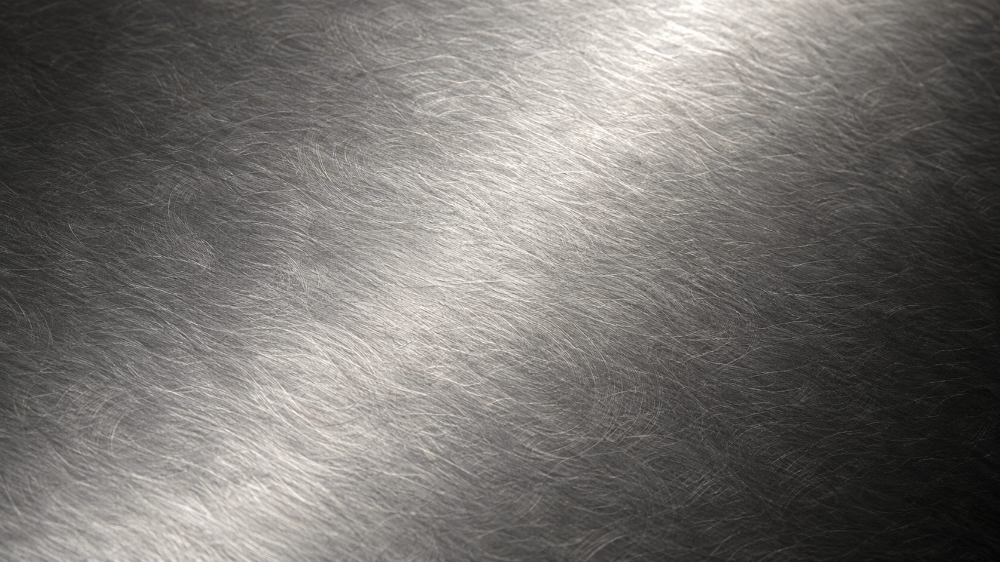
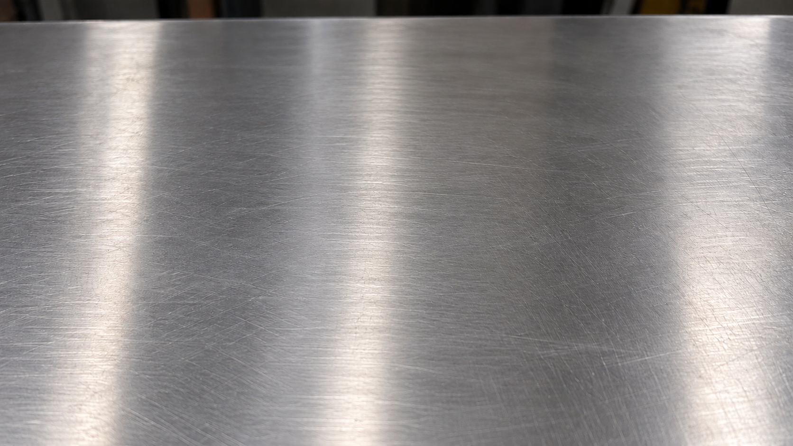

경계가 느껴지지 않는 이음새를 향해.
두 장의 강판이 만나는 곳까지, 하나의 표면처럼 보이도록 접합부를 다듬습니다.
THE ART OF FINISHING
빛이 스치는 표면부터 손끝에 닿는 모서리까지.
매일의 주방에 오래 남을 디테일을 만듭니다.

섬세한 직선의 결이 빛을 부드럽게 받아내는 헤어라인 마감.

여러 방향의 미세한 결로 차분한 표정을 만드는 바이브 마감.
BEFORE & AFTER
용접 후의 흔적을 다듬고, 표면의 결을 다시 정리합니다.
사진을 드래그하거나 아래 슬라이더를 움직여 비교해 보세요.


BEFORE · 연마 전AFTER · 연마 후마우스·터치·키보드 방향키로 조절할 수 있습니다. 접사와 비교 이미지는 마감 원리를 설명하는 AI 생성 이미지입니다.
두 장의 강판이 만나는 곳까지, 하나의 표면처럼 보이도록 접합부를 다듬습니다.
물의 흐름과 상판의 쓰임을 고려하며, 공간과 설치 조건에 맞는 디테일을 검토합니다.
0mm·0.1mm는 섬세한 마감을 표현하는 설계 콘셉트입니다. 실제 경사·치수·허용오차는 도면과 설치 조건에 따라 협의하며, 표기 수치는 성능 보장값이 아닙니다.
FOUR STEPS TO A REFINED SURFACE
도면에 맞춰 판재와 타공 위치를 정밀하게 가공합니다.
모서리와 연결부를 접합하며 구조와 형태를 확인합니다.
접합부를 평탄하게 다듬고, 단계별로 표면의 결을 정리합니다.
필요한 마감 사양을 적용하고, 치수·모서리·표면을 점검합니다.


QUIET CRAFT
접합부를 다듬고, 표면을 살피고, 치수를 확인하는 과정.
작은 디테일을 놓치지 않는 제작을 지향합니다.
공정 사진을 활용한 무음 모션입니다. 실제 작업실 영상은 아닙니다.